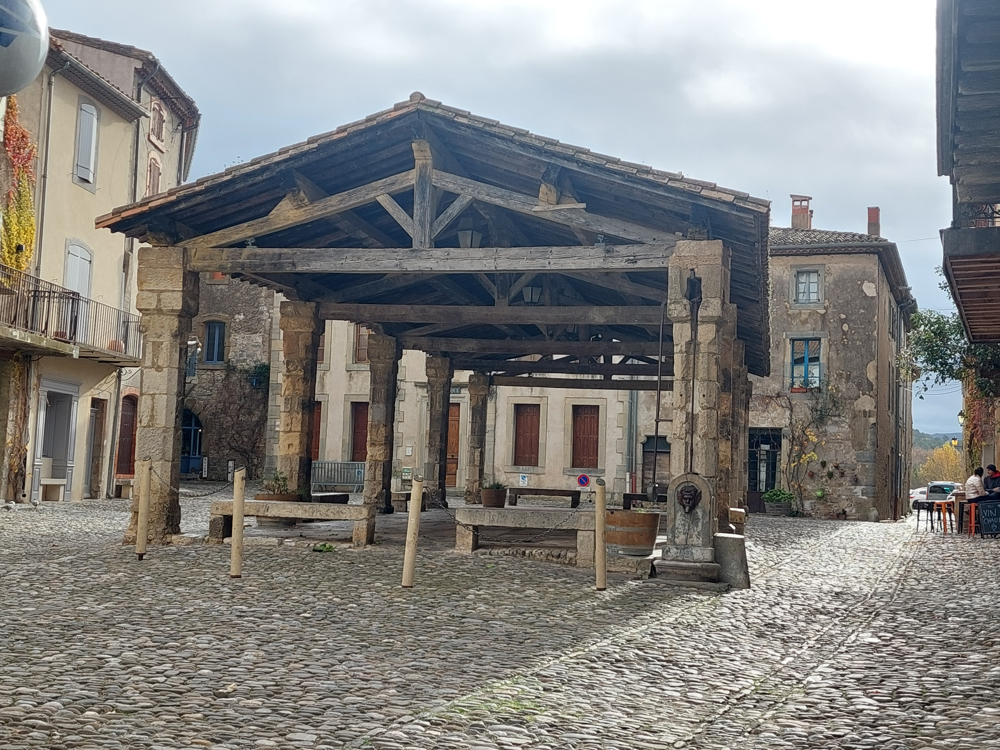

Esto es una imagen desde una ruta absoluta:

me llamo como quieras que me llames
mis comidas preferidas:
mis hobbies son:
soy un bloque
ahora verremos como se ponene los enlaces:
para saber sobre HTML clica aqui
y para que abra una pestaña nueva aquí
si quieres ir a Google haz clic aquí
pero si quieres ir a Wikipedia y quedarte allí
tan solo haz clic aquí
He vuelto
Esto es una imagen desde una ruta absoluta:
Esto es una imagen desde una ruta relativa:

Y esto es una imagen con un enlace, que al hacer clic en ella nos llevará a la página de Wikipedia sobre HTML
Hoja de estilos
este texto sera en rojo
este texto sera en azul
los estilos van dentro del HTML
esto es otro estilo
este es ya mas complejo